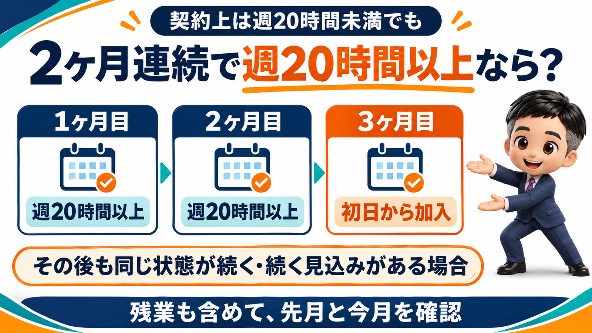

2ヶ月連続で加入基準を超えたら、社会保険に入れてください。入れ忘れが見つかると2年さかのぼりも！
今日は、アルバイトさんの社会保険の話をします。
先に結論を言っておきます。
加入基準を2ヶ月連続で超えたら、社会保険に入れてください。
入れないままにしておくと、あとで大きなお金の問題になります。
加入基準は、勤務時間で決まります。
社会保険というのは、健康保険と厚生年金のことです。
この社会保険には、加入基準があります。
基準になるのは、勤務時間です。
基本的には、週30時間を超えると加入しないといけません。
ただ、一部の会社では、これが週20時間になっています。
社会保険の被保険者が、51人以上いる会社さんです。
51人は、従業員数ではなく被保険者数で数えます。
ここは、意外と知られていないところだと思います。
51人というのは、従業員の数ではありません。
社会保険に入っている被保険者の数です。
たとえば、従業員は100人以上いる会社さんがあるとします。
でも、短時間の方が多くて、社会保険に入っているのは30人ぐらい。
こういう会社さんは、51人以上には当たりません。
従業員が多いから、もう対象だろうと思い込んでいる会社さんも、結構いらっしゃるのではないかと思います。
51人の基準は、段階的に下がっていきます。
この51人という数字は、これから段階的に下がっていきます。
2025年6月に、年金制度改正法が成立しました。
企業規模の要件を、2027年10月から2035年10月までの間に、段階的に撤廃する内容です。
2027年10月からは、36人以上の会社が対象になります。
2029年10月からは、21人以上です。
2032年10月からは、11人以上です。
そして2035年10月には、人数の要件がなくなります。
1人でも従業員を雇っている会社なら、週20時間以上の方は社会保険に入れないといけなくなるわけです。
2年ごとだったり3年ごとだったり、数字も中途半端で、正直なところ私も覚えられません。
毎回、資料を見ながら確認しています。
一番悩ましいのは、週20時間前後でシフトに入る方です。
週20時間というと、基本的にはアルバイトさんになると思います。
週20時間を超えないように、十数時間で働くという方法も、もちろんあります。
ただ、一番問題になりそうなのは、週20時間前後で働く方です。
特に、サービス業や小売業、アミューズメントなどの業界です。
アルバイトさんがシフトで動いているので、たくさん入る月もあれば、あまり入らない月もあります。
週20時間は、月間で言うと87時間ぐらいです。
この基準を超えたり超えなかったりする人をどうするか。
このような方が、たくさん出てくるのではないかと思います。
2ヶ月連続で週20時間以上なら、3ヶ月目から加入です。
ここは、日本年金機構が考え方を示しています。
契約上の所定労働時間は、週20時間未満だとします。
それでも実際の労働時間が2ヶ月連続で週20時間以上になり、その後も続く見込みがあるとします。
その場合は、3ヶ月目の初日から被保険者になる、という趣旨です。
所定労働時間は週20時間未満でも、実際の労働時間が週20時間以上となった場合の取扱い(日本年金機構)
なお、この週20時間には、残業時間も含めて考えます。
会社としては、毎月の勤務時間を、残業も含めてチェックしておく必要があります。
本人も入りたくないし、会社も入れたくない。
そういう場合は、基本的には全ての月で、週20時間、月87時間を超えないように管理するのがベストです。
とはいえ、忙しい月もあります。
突発的に1ヶ月だけ超えてしまうのは、しかたがない面もあります。
でも、2ヶ月連続はダメです。
「2ヶ月連続にならなければいいんでしょう」
こう考えて、超える月と超えない月を交互に繰り返すのも、あまりよくありません。
基本は週20時間未満に抑えて、超えるのは突発的な1ヶ月だけにしてください。

入れ忘れは、調査や本人の申し出で見つかります。
一番怖いのは、加入基準を超えていたのに入れていなかったことが、あとで見つかる場合です。
一つは、年金事務所の調査です。
調査では、賃金台帳を出すように言われます。
賃金台帳には勤務時間も載っているので、すぐに分かります。
「この人、勤務時間が明らかに多いのに、なぜ入っていないんですか」
こう言われてしまうと、入らざるを得ません。
もう一つは、本人からの申し出です。
「基準を超えているのに入れてもらえていないので、入れてもらえますか」
こう言われる可能性もあります。
加入は、最大2年さかのぼります。
ここで、「今から入ってくださいね」とはなりません。
加入基準を超えていたときまで、さかのぼって入れることになります。
さかのぼれる期間は、最大2年です。
社会保険料を徴収する権利は2年で時効になる、と法律で定められているからです。
2年さかのぼれば、その間の社会保険料が発生します。
社会保険料は、今とても高い。
保険料は、標準報酬月額に保険料をかけて決まります。
基本給だけでなく、手当や残業代、交通費も含めた合計の金額で、だいたいの枠が決まる仕組みです。
週20時間を少し超えてアルバイトさんだと、時給にもよりますが、給与はざっくり15万円ぐらいかなと思います。
15万円で計算してみます。
協会けんぽ大阪支部の令和8年度の料率で、40歳未満の健康保険の本人負担は7,597円です。
厚生年金の本人負担は、13,725円です。
合わせて、2万円ちょっとになります。
社会保険は労使折半なので、会社も同じ額を納めます。
なお、令和8年4月分からは、子ども・子育て支援金(0.23%)が健康保険料に上乗せされています。
2年分なら、1人で約100万円になります。
本人負担の2万円を24ヶ月分、さかのぼって納めるとします。
それだけで、48万円です。
「48万円、いきなり払ってください」
こう言われて、すぐに出せるアルバイトさんは多くないと思います。
アルバイトさんは、2年経てばもう辞めていることも十分あります。
そんなに払えと言うなら辞めます、となってしまうこともあるでしょう。
辞めた人に、ずっと請求し続けるのも、現実には難しいものです。
もちろん、本人の保険料なので、本人に負担してもらってもかまいません。
本人が将来受け取る年金にも関わります。
ただ、手続きをしていなかったのは会社ですから、会社に責任がないとは言えません。
結局、会社が本人の分まで負担するケースが、よくあるのです。
そうすると、本人分の48万円と会社分の48万円で、96万円です。
給与15万円の方1人で、約100万円を会社が一度に負担することになりかねません。
10人いたら、1,000万円です。
金額によっては、経営問題にもなりえます。
まとめ
アルバイトさんの勤務時間が、2ヶ月連続で加入基準を超えたら、社会保険に入れてください。
社会保険の加入基準は勤務時間で決まり、被保険者51人以上の会社では週20時間です。
51人は、従業員数ではなく、社会保険の被保険者数で数えます。
この人数の要件は2027年10月から段階的に下がり、2035年10月にはなくなります。
悩ましいのは、週20時間前後でシフトに入るアルバイトさんです。
実際の労働時間が2ヶ月連続で週20時間以上なら、3ヶ月目から加入です。
週20時間には、残業時間も含めます。
突発的な1ヶ月はともかく、交互に超えるのもよくありません。
入れ忘れは、年金事務所の調査や本人の申し出で見つかります。
見つかると、最大2年さかのぼって加入することになります。
給与15万円なら本人負担は月2万円ほどで、会社も同じ額です。
2年分を会社がまとめて負担すれば、1人で約100万円です。
本人が在籍している間に入れておけば、本人負担分は給与から控除できます。
働き方をアセントさせる一歩は、シフト表を「今月」だけでなく「先月と今月」で見ることです。